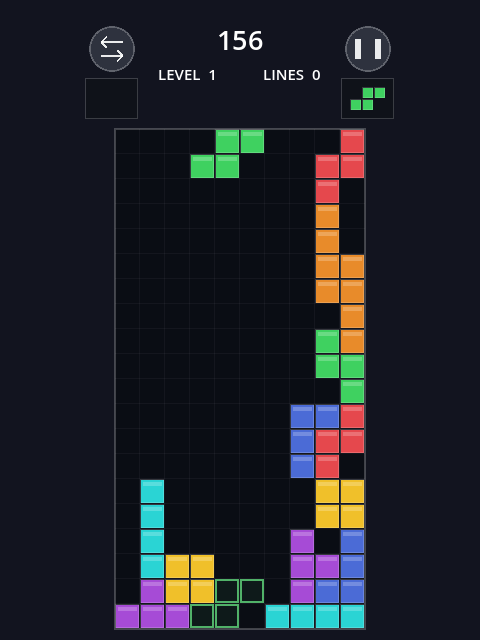
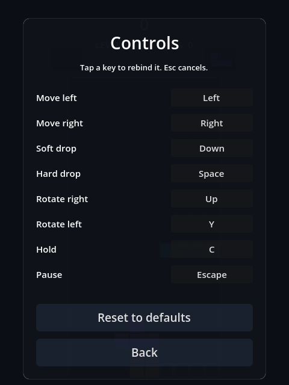
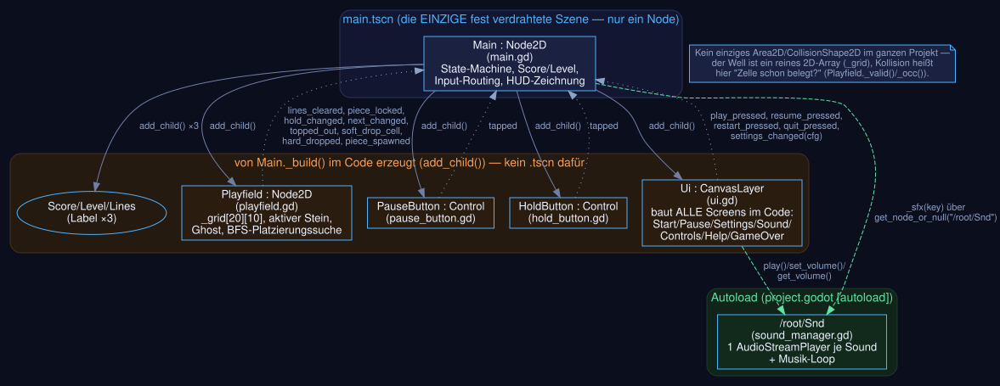
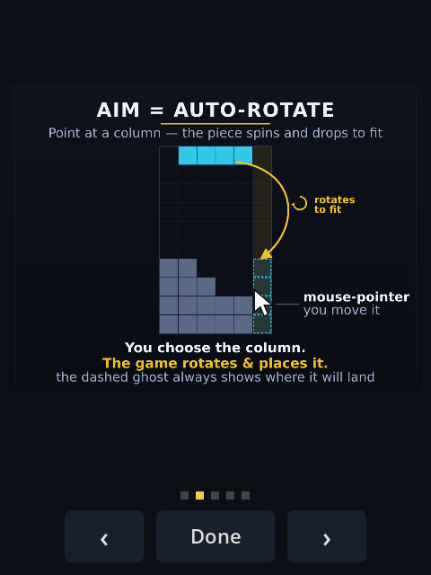
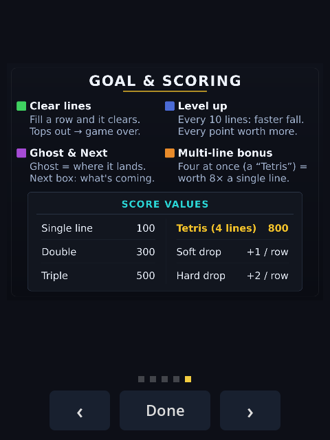
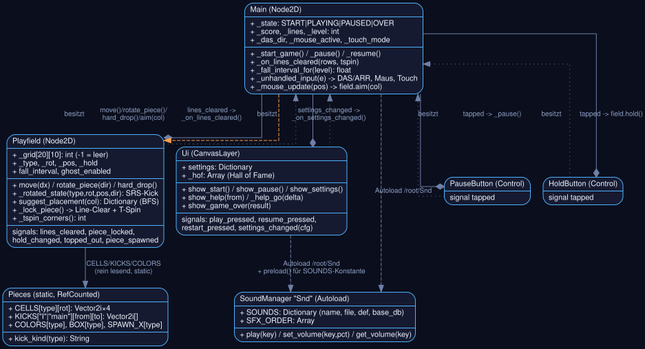

GDScript-Dateien — Bedeutung & Modularisierung
jede Datei kennt nur, was sie selbst betrifft
Noch konsequenter getrennt als in vergleichbaren Projekten dieses
Lernpfads: playfield.gd kennt weder Punkte noch Level
noch HUD — es meldet nur per Signal, was im Well passiert
(Zeile voll, Stein gelandet, Tetromino gehalten). main.gd
ist der einzige Ort, der daraus Score/Level macht; ui.gd
wiederum weiß nichts vom Spielzustand, nur von Bildschirmen und
Callables.
| Bereich | Dateien | Zweck |
|---|---|---|
| Einstieg / State-Machine |
main.gd | Einziger Ort, der den Spielzustand kennt (START→PLAYING→PAUSED→OVER). Score/Level/Lines, Fall-Geschwindigkeit, responsives Layout, routet Tastatur/Maus/Touch/Gamepad an playfield.gd, zeichnet HUD-Vorschauen + Flash-Text selbst per _draw(). |
| Spielfeld & Regeln |
playfield.gd | Das 10×20-Grid als reines Array, SRS-Rotation mit Wandkicks, Line-Clear + T-Spin-Erkennung, Ghost-Piece, die Maus-Platzierungssuche (BFS + Heuristik). Komplett unabhängig von main.gd testbar. |
| Tetromino- Daten |
pieces.gd | Rein statisch (RefCounted, kein Node im Baum): die vier SRS-Rotationszustände pro Stein, die Kick-Tabellen, Farben, Spawn-Spalten. |
| UI | ui.gd | Alle Bildschirme auf einem CanvasLayer, komplett im Code gebaut — Start / Pause / Settings (+ Sound- und Controls-Unterseite) / bildbasierte Hilfe / Game Over + Hall of Fame. Kein einziges .tscn dafür. |
| HUD-Buttons | pause_button.gd hold_button.gd |
Kleine eigenständige Controls mit eigenem _draw() + _gui_input(), je ein tapped-Signal — reagieren auf Touch und Maus gleichermaßen. |
| Audio | sound_manager.gd | Autoload Snd: ein AudioStreamPlayer je Sound-Key + Musik-Loop, Pro-Sound-Lautstärke mit base_db-Kalibrierung. |
| Diagnose | _selftest.gd | Headless-Parse-Check + ein paar Logik-Assertions. Bekannte Lücke: fängt nur harte Abhängigkeiten von playfield.gd/pieces.gd — main.gd/ui.gd brauchen einen echten Boot-Check (godot --headless ohne --script). |


Szenenaufbau & Abhängigkeiten
eine fast leere .tscn, wirklich alles Übrige im Code
main.tscn (run/main_scene) besteht aus
genau einem Node — Main mit seinem
Skript, sonst nichts. Kein vorverdrahtetes Kind, kein einziges
weiteres .tscn im ganzen Projekt. Main._build()
erzeugt beim Start jeden Node per add_child():
das Playfield, die drei HUD-Labels, die beiden
HUD-Buttons — und Ui, das seinerseits jeden Button,
jeden Slider, jedes Panel für jeden Bildschirm im Code
zusammensetzt (siehe ui.gd::_button()/_row()/
_sound_row()). Das ist konsequenter als bei den anderen
Projekten dieses Lernpfads, die zumindest für Laufzeit-Objekte (Gegner,
Projektile) noch eigene .tscn-Dateien instanziieren —
hier gibt es nicht einmal das.

_build()Kein Kollisionssystem — ein Array ersetzt Area2D
Anders als in den Actionspielen dieses Lernpfads gibt es in Tetris
kein einziges Area2D/CollisionShape2D
und keine Physik-Layer. „Kollision" heißt hier ausschließlich: ist
eine Grid-Zelle schon belegt? Der komplette Well ist ein simples
verschachteltes Array, -1 bedeutet leer,
jeder andere Wert ist der Tetromino-Typ (für die Farbe beim Zeichnen):
func _valid(type: int, rot: int, pos: Vector2i) -> bool:
for c in _cells(type, rot, pos):
if c.x < 0 or c.x >= COLS or c.y >= ROWS:
return false
if c.y >= 0 and _grid[c.y][c.x] != -1: # y<0 = über der Decke, immer frei
return false
return true
func _occ(x: int, y: int) -> bool:
if x < 0 or x >= COLS or y >= ROWS:
return true
if y < 0:
return false
return _grid[y][x] != -1Jede einzelne Spielregel — Bewegung, Rotation, Wandkick, Ghost, sogar die Maus-BFS-Suche — ruft am Ende nur diese eine Funktion auf. Kein Node muss dafür existieren, keine Physik-Engine läuft mit.
Wesentliche Code-Ausschnitte
Steuerung → Spawn/Rotation → Line-Clear/T-Spin → Ghost/Maus-Assistent → Scoring
ASteuerung — drei Eingabewege, ein gemeinsames Ziel
Tastatur (DAS/ARR), Maus (Aim-Spalte) und Touch (Swipe) sind völlig
unabhängig implementiert, aber alle drei rufen am Ende dieselben
Playfield-Methoden auf — move(),
rotate_piece(), hard_drop(), aim().
Kein Eingabeweg hat eigene Spiellogik.
var dir := 0
if Input.is_action_pressed("move_right"): dir += 1
if Input.is_action_pressed("move_left"): dir -= 1
if dir == 0:
_das_dir = 0
return
_use_keyboard()
if dir != _das_dir: # Richtungswechsel: sofort 1 Zelle, DAS neu starten
_das_dir = dir
_das_time = 0.0
_arr_time = 0.0
if _field.move(dir):
_sfx("move")
return
_das_time += dt
if _das_time >= DAS: # 0.16s Verzögerung, danach Auto-Repeat
_arr_time += dt
while _arr_time >= ARR: # 0.03s pro weiterer Zelle
_arr_time -= ARR
if not _field.move(dir):
breakMaus und Touch münden im selben Aufruf —
Playfield.aim(col) dreht das Stück in die beste Rotation
für diese Spalte und schiebt es dorthin (siehe Abschnitt D):
func _mouse_update(screen_pos: Vector2) -> void:
if _field.piece_left_col() < 0:
return
var col := (screen_pos.x - _field.position.x) / float(_field.cell) - 0.5
...
_field.aim(col)
func _touch_refresh_suggest() -> void:
if _field.piece_left_col() < 0:
_field.set_suggestion({})
return
_field.aim(float(_touch_col)) # _touch_col wandert per Swipe, Rest ist identisch zur MausBPiece-Spawn — 7-Bag-Zufall & SRS-Rotation mit Wandkicks
Die Nachschub-Warteschlange füllt sich aus einem klassischen „7-Bag" — jeder der sieben Steine kommt garantiert einmal pro Beutel vor, per Fisher-Yates gemischt, bevor der nächste Beutel beginnt:
func _bag_next() -> int:
if _bag.is_empty():
_bag = [Pieces.I, Pieces.O, Pieces.T, Pieces.S, Pieces.Z, Pieces.J, Pieces.L]
for i in range(_bag.size() - 1, 0, -1):
var j := _rng.randi_range(0, i)
var tmp = _bag[i]; _bag[i] = _bag[j]; _bag[j] = tmp
return _bag.pop_front()Rotation ist echtes SRS: eine feste Tabelle nennt pro Ausgangs-/Zielzustand bis zu fünf Verschiebungen („Kicks"), die der Reihe nach probiert werden — die erste, die eine gültige Position ergibt, gewinnt:
func _rotated_state(type: int, rot: int, pos: Vector2i, dir: int) -> Array:
var nr := (rot + dir) % 4
if nr < 0: nr += 4
var table = Pieces.KICKS[Pieces.kick_kind(type)] # "I" oder "main" (J/L/S/T/Z) — O kickt nie
var kicks: Array = table.get(rot, {}).get(nr, [Vector2i.ZERO])
for k in kicks:
var np: Vector2i = pos + Vector2i(k.x, k.y)
if _valid(type, nr, np):
return [nr, np]
return [] # jeder Kick blockiert -> Rotation abgelehntCLine-Clear-Erkennung & T-Spin
Landet ein Stein, prüft _lock_piece() zuerst auf einen
T-Spin (T-Stein, letzter Move war eine Drehung, mindestens 3 der 4
diagonalen Eckzellen blockiert), schreibt dann die Zellen ins Grid und
sucht volle Reihen:
func _lock_piece() -> void:
var tspin := _type == Pieces.T and _last_rot and _tspin_corners() >= 3
var topped := true
for c in _cells(_type, _rot, _pos):
if c.y >= 0: topped = false
if c.y >= 0 and c.y < ROWS and c.x >= 0 and c.x < COLS:
_grid[c.y][c.x] = _type
piece_locked.emit()
if topped:
playing = false
topped_out.emit()
return
var full: Array = []
for r in ROWS:
if not _grid[r].has(-1):
full.append(r)
_type = -1
if full.is_empty():
if tspin:
lines_cleared.emit(0, true) # T-Spin ohne Zeile zählt trotzdem
_spawn_from_queue()
return
_clearing = full # einfrieren, _process() zeigt den Flash
_clear_t = 0.0
lines_cleared.emit(full.size(), tspin)Der T-Spin-Test selbst zählt, wie viele der vier Ecken um die Steinmitte entweder außerhalb des Wells liegen oder schon belegt sind — Wand und Boden zählen genauso mit wie gestapelte Zellen:
func _tspin_corners() -> int:
var ctr := _pos + Vector2i(1, 1) # die T-Box-Mitte sitzt immer bei (1,1)
var n := 0
for d: Vector2i in [Vector2i(-1,-1), Vector2i(1,-1), Vector2i(-1,1), Vector2i(1,1)]:
var p: Vector2i = ctr + d
if p.x < 0 or p.x >= COLS or p.y >= ROWS:
n += 1
elif p.y >= 0 and _grid[p.y][p.x] != -1:
n += 1
return nNach CLEAR_TIME (0.26 s, ein weißer Wash +
Squash-Animation in _draw()) räumt
_collapse_cleared() die vollen Reihen weg und ruft
_spawn_from_queue() — Gameplay steht während des Flashs
still, _process() kehrt sofort zurück.
DGhost-Piece & Maus-Platzierungssuche
Ohne Maus-Assistenz ist der Ghost trivial — einfach so weit wie möglich nach unten:
func _ghost_pos() -> Vector2i:
var p := _pos
while _valid(_type, _rot, p + Vector2i(0, 1)):
p += Vector2i(0, 1)
return pFür Maus und Touch übernimmt suggest_placement() die
eigentliche Arbeit — eine Breitensuche über
links/rechts/runter/beide Rotationsrichtungen ab der Spawn-Position
sammelt jede erreichbare Ruhelage, danach entscheidet eine
gewichtete Heuristik:
while not frontier.is_empty() and iterations < 4000:
var s = frontier.pop_back()
var r: int = s[0]; var p: Vector2i = s[1]
if not _valid(_type, r, p + _DOWN):
landed.append([r, p]) # kann nicht weiter fallen -> eine Ruhelage
var moves: Array = [[r, p + Vector2i(-1,0)], [r, p + Vector2i(1,0)], [r, p + _DOWN]]
var cw := _rotated_state(_type, r, p, 1)
if not cw.is_empty(): moves.append(cw) # Rotation ist nur ein weiterer BFS-Zug
var ccw := _rotated_state(_type, r, p, -1)
if not ccw.is_empty(): moves.append(ccw)
for m in moves:
var key := Vector3i(m[1].x, m[1].y, m[0])
if not seen.has(key) and _valid(m[0], m[1]):
seen[key] = true
frontier.append([m[0], m[1]])Die Bewertung gewichtet Löcher am stärksten negativ, geräumte Zeilen positiv, und zieht die Zielspalte nur als leichten Tie-Breaker heran:
return 4.0 * float(lines) \
- 6.0 * float(holes) \
- 0.55 * float(bumpiness) \
- 0.16 * float(aggregate) \
- 0.45 * float(piece_span_y) \ # liegt lange Steine flach, außer Löcher sprechen dagegen
- 0.8 * absf(center - target_col) # Cursor-Spalte zieht nur sanft
suggest_placement()EScoring & Leveling
Die Punktevergabe passiert komplett in main.gd —
playfield.gd meldet nur rows und
tspin, kennt selbst keine Punktwerte:
func _on_lines_cleared(rows: int, tspin: bool) -> void:
if tspin:
_add_score(TSPIN_SCORE[clampi(rows, 0, 3)] * _level)
_flash(["T-SPIN","T-SPIN SINGLE","T-SPIN DOUBLE","T-SPIN TRIPLE"][clampi(rows,0,3)])
_sfx("lines")
else:
_add_score(LINE_SCORE[clampi(rows, 0, 4)] * _level)
if rows > 0:
_sfx("line1" if rows == 1 else "lines")
_lines += rows
var new_level: int = _start_level + int(_lines / 10.0)
if new_level != _level:
_level = new_level
_field.fall_interval = _fall_interval_for(_level)
_flash("LEVEL %d" % _level)Die Fallgeschwindigkeit selbst folgt einer klassischen Potenzkurve, pro Level etwas steiler werdend und bei 20 gedeckelt:
func _fall_interval_for(level: int) -> float:
var l := clampi(level, 1, 20)
return maxf(pow(0.8 - (l - 1) * 0.007, l - 1), 0.016)Die übrigen Balance-Werte stehen als dokumentierte const
direkt im jeweiligen Skript:
const DAS := 0.16 # main.gd — Verzögerung bis Auto-Repeat einsetzt
const ARR := 0.03 # main.gd — Sekunden pro weiterer Zelle danach
const LINE_SCORE := [0, 100, 300, 500, 800] # main.gd — ×Level
const TSPIN_SCORE := [400, 800, 1200, 1600] # main.gd — 0..3 Zeilen, ×Level
const LOCK_DELAY := 0.5 # playfield.gd — Zeit auf dem Boden, bevor gesperrt wird
const MAX_LOCK_RESETS := 15 # playfield.gd — Deckel gegen endloses Infinity-Spin
const SOFT_DROP_FACTOR := 20.0 # playfield.gd — ×normale Gravity beim Soft-Drop
const CLEAR_TIME := 0.26 # playfield.gd — Line-Clear-Flash, bevor Reihen fallen
LINE_SCORE/TSPIN_SCORE obensoft_drop_cell,
+1/Zeile) und der Hard-Drop-Bonus (hard_dropped(rows),
+2/Zeile) laufen als eigene, sehr kleine Signale direkt aus
playfield.gd — sie werden nicht über
lines_cleared mitgezählt, weil sie unabhängig davon
entstehen, ob am Ende überhaupt eine Reihe voll wird.
Wichtige Signale
wer meldet was an wen
| Signal | Emitter | Empfänger | Bedeutung |
|---|---|---|---|
lines_cleared(rows, tspin) | Playfield | Main._on_lines_cleared |
Auslöser für Punkte, Level-Aufstieg, Flash-Text. rows=0, tspin=true ist gültig (T-Spin ohne Zeile). |
piece_locked | Playfield | Main (_sfx("drop")) |
Jedes Aufsetzen — Hard-Drop und normales Absinken. |
hold_changed(type) | Playfield | Main (Sound + queue_redraw) |
Hold-Box neu zeichnen. |
next_changed(queue) | Playfield | Main (queue_redraw) |
Next-Box neu zeichnen. |
topped_out | Playfield | Main._on_top_out |
Game Over — ein gesperrter Stein ragt noch über die Decke hinaus. |
soft_drop_cell | Playfield | Main (_add_score(1)) |
+1 Punkt je Zelle, die per gehaltenem Soft-Drop gewonnen wird. |
hard_dropped(rows) | Playfield | Main (_add_score(rows*2)) |
+2 Punkte je Zeile Fallstrecke beim Hard-Drop. |
piece_spawned | Playfield | Main._on_piece_spawned |
Touch-Zielspalte neu herleiten bzw. Maus-Aim erneut anwenden. |
tapped | PauseButton / HoldButton | Main._pause() / field.hold() |
HUD-Buttons, feuern schon beim Press (kein Fehlklick durch verpasstes Release). |
play_pressed / resume_pressed / restart_pressed / quit_pressed / settings_changed(cfg) | Ui | Main | Menü-Navigation — Ui kennt dabei nie den Main-Spielzustand selbst, nur diese Callables/Signale. |
Optional: UML-Übersicht
ging auch hier
Eine vereinfachte Klassen-/Beziehungsübersicht der oben genannten Kernklassen — Rauten bedeuten „besitzt", gepunktete Linien den Signal-Fluss, gestrichelte Pfeile direkte Methodenaufrufe.

Main, sein Playfield, sein
Ui und die beiden winzigen HUD-Buttons. Die eigentliche
Komplexität steckt nicht im Szenenbaum, sondern in
playfield.gds eigener Logik (SRS-Kicks, BFS, T-Spin).